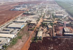

越南光電合作計畫

小農綠電攜手明越投資股份有限公司，將台灣光電整合經驗輸出至越南，協助推動光儲能市場，打造國際永續合作典範。
Solarfarmers collaborates with Minh Viet Investment to introduce Taiwan's solar integration expertise to Vietnam, promoting energy storage markets and building international sustainable partnerships.
Solarfarmers hợp tác cùng Minh Viet Investment, đưa kinh nghiệm năng lượng mặt trời của Đài Loan đến Việt Nam, thúc đẩy thị trường lưu trữ năng lượng và xây dựng quan hệ hợp tác bền vững quốc tế.
合作亮點 / Key Points / Điểm nổi bật
- 明越投資共同開發越南光儲市場
- 結合台灣小農經驗，打造最佳能源解決方案
- 促進台越雙邊技術交流與投資
- 支持東協區域能源轉型
title="越南光電介紹" frameborder="0" allowfullscreen>